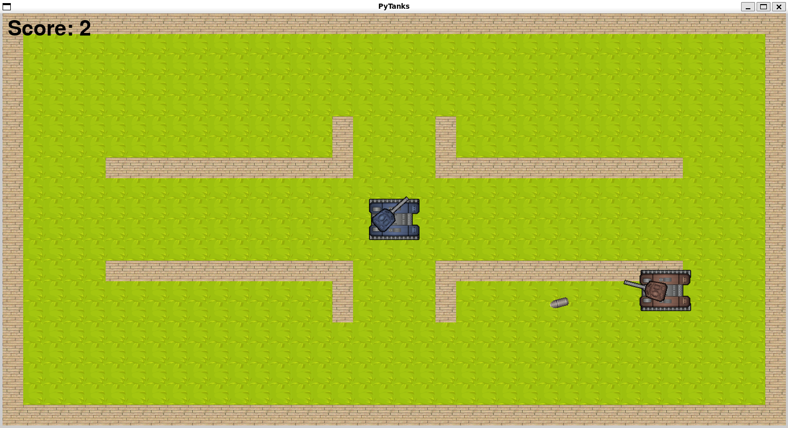
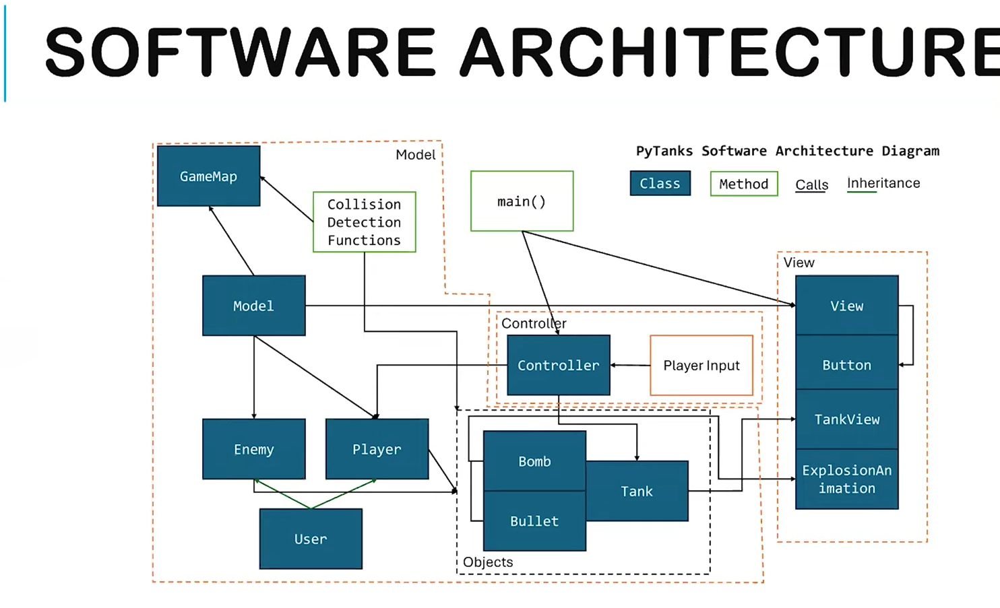

PyTanks
Built a Wii Tanks-inspired game in Python using a modular MVC architecture, with work focused on movement, aiming, projectile behavior, collision handling, and gameplay-system testing in a 3-person team.

Gameplay view showing player controls, projectile interactions, and the final game interface.
Overview
PyTanks was a collaborative software project inspired by Wii Tanks. The goal was not just to recreate a playable game, but to build it in a way that emphasized software architecture, maintainability, and team-based development rather than relying on a single-file prototype.
The project used a Model-View-Controller structure to separate game state, rendering, and control logic across the codebase. That architecture made it easier to implement new gameplay features, reason about interactions between systems, and debug behavior as the project became more complex.
The full project site is available here: PyTanks Website .
Images

MVC architecture diagram showing the separation of gameplay logic, rendering, and control flow.
My Contributions
- Implemented core gameplay systems including tank movement, mouse-based aiming, projectile spawning, wall interaction, and bullet bounce behavior.
- Worked within an MVC architecture to keep gameplay logic, rendering, and user input separated across a modular codebase.
- Helped develop collision and interaction logic for gameplay events involving projectiles, enemies, and map obstacles.
- Contributed unit tests and debugging for important game behaviors including kills, deaths, enemy respawning, bombs, and score tracking.
- Collaborated in a shared GitHub codebase with a 3-person team, iterating on systems while keeping the project understandable and maintainable.
Technical Highlights
A major part of the project was building gameplay systems inside a modular software architecture rather than coding everything into one script. The MVC design forced us to think carefully about where game state should live, how rendering should stay separate from logic, and how user input should flow through the system. That made the project a stronger software-engineering exercise than a typical small game prototype.
My work focused heavily on player interaction systems. I implemented tank movement, mouse-based aiming, projectile spawning, and bullet bounce behavior, along with the wall and collision interactions needed to make those systems behave consistently during play. These features required coordinating multiple parts of the codebase rather than solving each behavior in isolation.
I also contributed to testing and debugging. The project included unit tests for gameplay behavior such as kills, deaths, enemy respawning, bomb effects, and score updates. That testing work helped make the game more reliable and gave the team a structured way to verify behavior while continuing to add features.
Challenges
One of the main challenges was making gameplay interactions feel correct while working in a modular architecture. Features like aiming, projectile motion, collision detection, and enemy interactions all depend on one another, so bugs often appeared at the boundaries between systems rather than inside one isolated function.
Another challenge was collaboration. Because the project was built by a team, changes in one subsystem could affect others, which meant code had to remain readable, modular, and testable as the project evolved. That made architecture and debugging just as important as feature implementation.
Tools and Skills
Tools: Python, Pygame, Git, GitHub
Skills: MVC Architecture, Gameplay Systems, Collision Handling, Object-Oriented Programming, Unit Testing, Debugging, Team-Based Development
Project Status
This project was completed as a collaborative software build and served as a strong introduction to modular game architecture, gameplay-system implementation, testing, and team-based Python development.